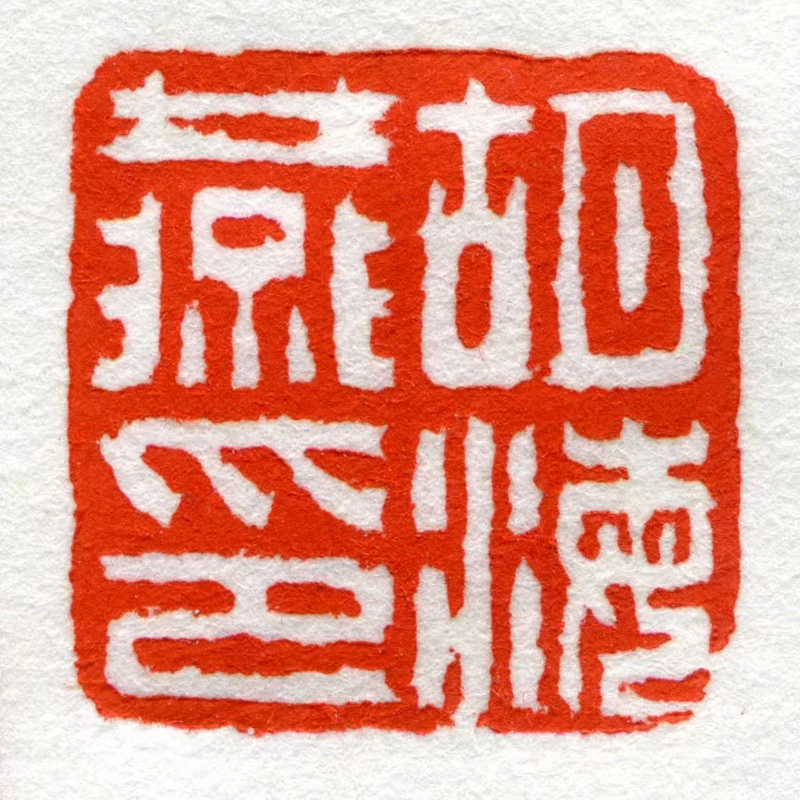

多书体临写
持续练习楷、隶、篆、行草，从笔画起收、单字结体到整幅行气逐层校正。
查看书法作品书法与美育作品集

从一笔一画的练习，
走向耐心而清楚的教学。
学习路径与教育方向
从临帖到创作，
也从自己的书桌走向课堂。
我在齐鲁理工学院系统学习书法，平时持续练习楷、隶、篆、行草，也以花鸟和山水训练构图、用墨与观察。
这份作品集既呈现完成稿，也保留临写和课堂记录。希望让观看者看见作品背后的训练路径，以及我如何把专业学习转化为清楚、耐心的书写辅导。
希望从事书法教育与公共美育工作。教学中，我关注孩子怎样握笔、怎样观察字形，也关注他们能否在一次次练习中建立耐心与秩序。
把能力放回具体作品与课堂中看。
把专业训练转化为课堂步骤
辅导基础笔画、坐姿握笔和卷面规范，用分步示范帮助孩子建立书写习惯。
课堂重点坐姿握笔 · 基础笔画 · 书写耐心
结合日常语文作业，练习汉字结构和书写规范，跟进作业中的常见问题。
课堂重点字形观察 · 作业订正 · 卷面秩序
协助准备课堂材料、进行书写示范，照顾不同年龄孩子的练习节奏。
课堂重点材料准备 · 现场示范 · 分龄陪伴
8 件作品，点击可进入大图查看笔墨细节与作品说明。
证书图片均可点击查看原件
2025 · 山东赛事
毛笔类大学生组
书法教育与公共美育方向
入选作品 · 2026
入展作品
“师生绽风采 妙手写丹心”
公共文化实践
参与现场服务与活动协作。
教育、培训与公共文化
书写示范、基础美术与传统文化教学。
少儿硬笔、毛笔启蒙与日常练习辅导。
书法工坊、展览导览及公众文化活动。
用于教育与公共文化岗位交流
期待下一间课堂。
欢迎学校、教育机构及公共文化团队交流。